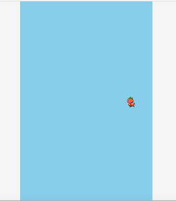

Sprite画像をフレームアニメーションしたまま移動させます。
update関数に移動処理を記述する
フレームアニメーションは自動で管理されていますので、単にupdate関数内に移動処理を書くだけで移動させることができます。
// スプライト画像作成
var sprite = Sprite('tomapiko', 64, 64).addChildTo(this);
sprite.setPosition(600, 480);
// スプライトにフレームアニメーションをアタッチ
var anim = FrameAnimation('tomapiko_ss').attachTo(sprite);
// アニメーションを指定する
anim.gotoAndPlay('walk');
// 更新
sprite.update = function() {
// 移動処理
sprite.x -= 2;
};
サンプルコード
コードを見る
// グローバルに展開
phina.globalize();
// アセット
var ASSETS = {
// 画像
image: {
'tomapiko': 'https://cdn.jsdelivr.net/gh/phinajs/phina.js@develop/assets/images/tomapiko_ss.png',
},
// スプライトシート
spritesheet: {
"tomapiko_ss":
{
// フレーム情報
"frame": {
"width": 64, // 1フレームの画像サイズ（横）
"height": 64, // 1フレームの画像サイズ（縦）
"cols": 6, // フレーム数（横）
"rows": 3, // フレーム数（縦）
},
// アニメーション情報
"animations" : {
"walk": { // アニメーション名
"frames": [12,13,14], // フレーム番号範囲
"next": "walk", // 次のアニメーション
"frequency": 6, // アニメーション間隔
},
}
},
}
};
/*
* メインシーン
*/
phina.define("MainScene", {
// 継承
superClass: 'DisplayScene',
// 初期化
init: function() {
// 親クラス初期化
this.superInit();
// 背景色
this.backgroundColor = 'skyblue';
// スプライト画像作成
var sprite = Sprite('tomapiko', 64, 64).addChildTo(this);
sprite.setPosition(600, 480);
// スプライトにフレームアニメーションをアタッチ
var anim = FrameAnimation('tomapiko_ss').attachTo(sprite);
// アニメーションを指定する
anim.gotoAndPlay('walk');
// 更新
sprite.update = function() {
// 移動処理
sprite.x -= 2;
};
},
});
/*
* メイン処理
*/
phina.main(function() {
// アプリケーションを生成
var app = GameApp({
// MainScene から開始
startLabel: 'main',
// アセット読み込み
assets: ASSETS,
});
// fps表示
//app.enableStats();
// 実行
app.run();
});